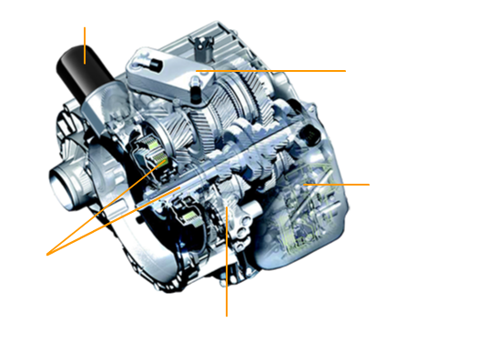
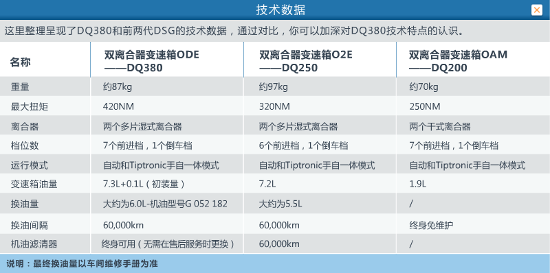
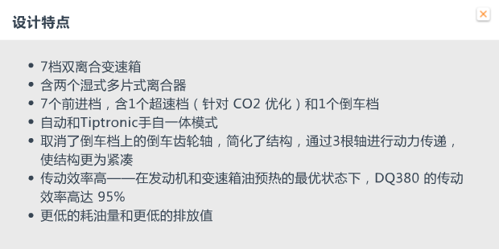

DQ380基本信息
DQ380是在大众众所周知、非常成功的6档双离合
变速箱02E（ DQ250 ）的基础上发展而来的。
变速箱02E（ DQ250 ）的基础上发展而来的。
当时研发DQ380变速箱的目的不仅要把手动变速
箱和自动变速箱合二为一，而且还要在合理利用空
间的基础上实现高扭矩，以便于日后在轿车上的应
用。降低油耗和减少 CO2 排放量等方面同样也是
研发这款变速箱的目的。
箱和自动变速箱合二为一，而且还要在合理利用空
间的基础上实现高扭矩，以便于日后在轿车上的应
用。降低油耗和减少 CO2 排放量等方面同样也是
研发这款变速箱的目的。
请点击下面的特点与参数，来了解更多详细信息。

设计特点
设计参数

